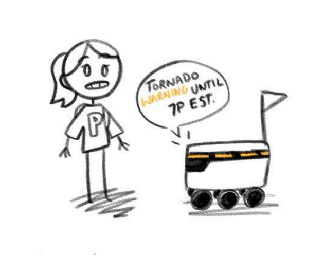
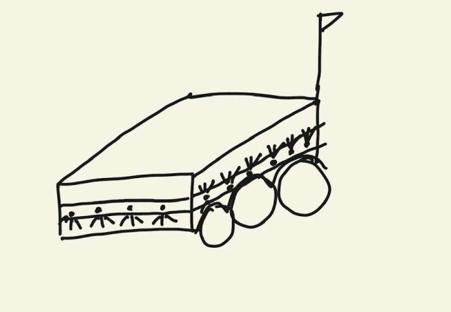
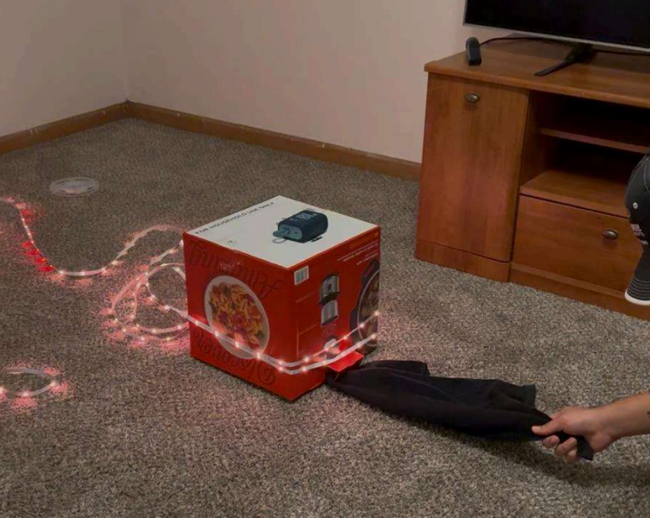
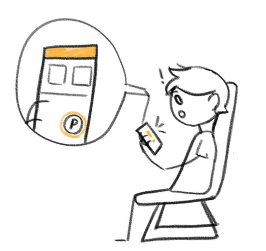
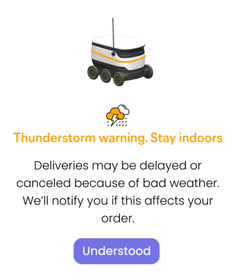

Digital distractions pose a barrier to the uninterrupted attention that many tasks (work, study) require. Our aim was to prototype an intervention to assist in mitigating digital distractions for graduate students and young professionals. To do this, we leveraged primary and secondary research methods and used iterative design processes. The final ideas were evaluated using a scoring matrix.
Our final design involves a color-coded LED strip around the crown of the Starships to warn students of incoming severe weather. Additionally, users indoors ordering food would see a dismissable flashing popup to remain indoors or take shelter.

The final prototype for this project, using a cloth bag.

A screenshot from Figma showing some of the products of the ideation phase.

Another Figma screenshot showing some of the themes found during affinity diagramming.

Another Figma screenshot showing some of the themes found during affinity diagramming.

Another Figma screenshot showing some of the themes found during affinity diagramming.